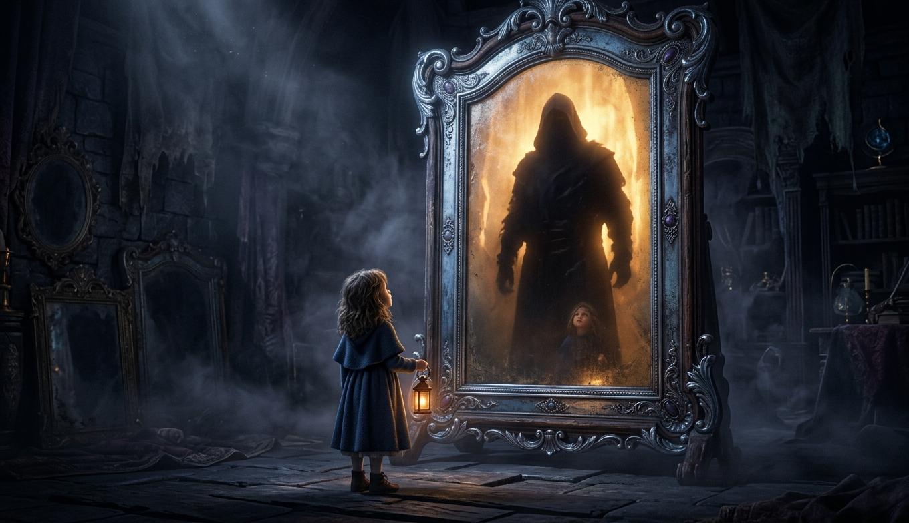
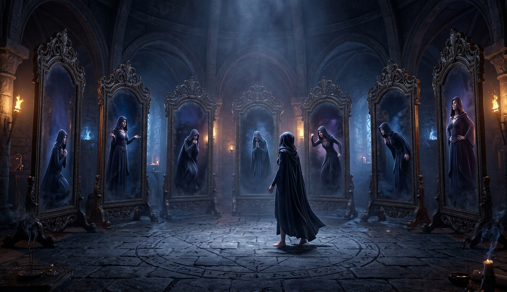
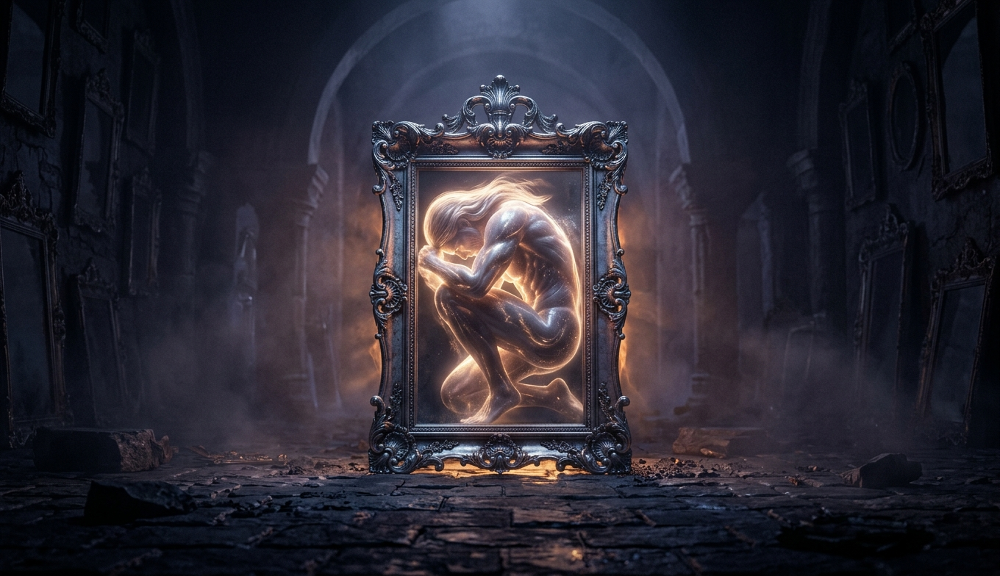
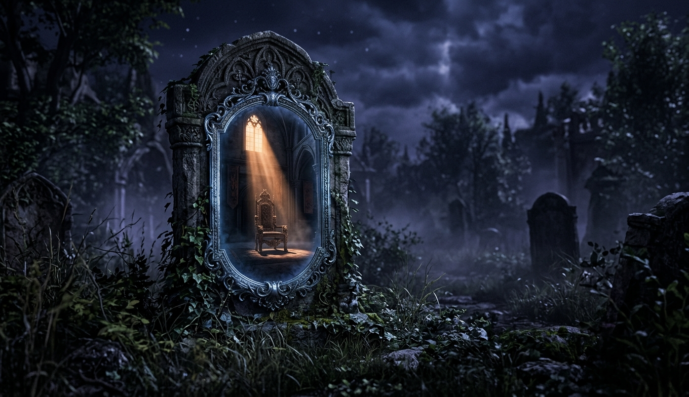
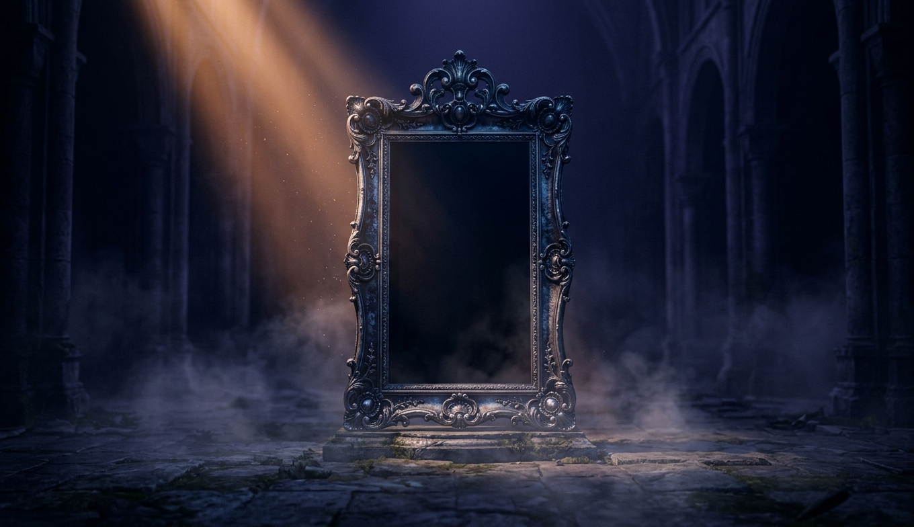
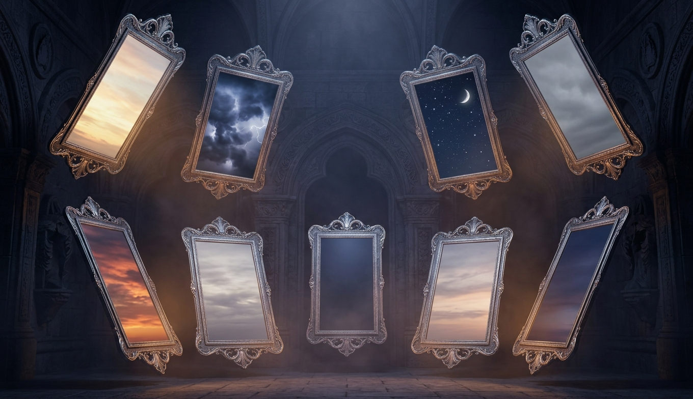
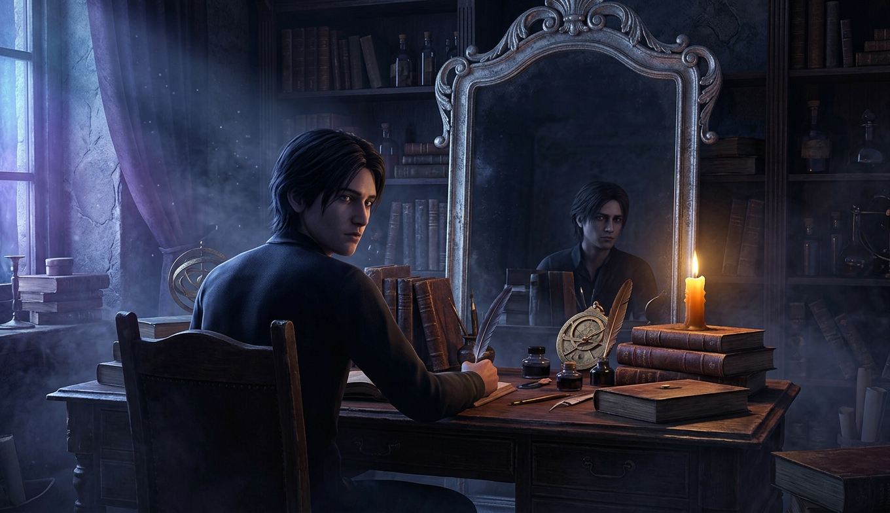
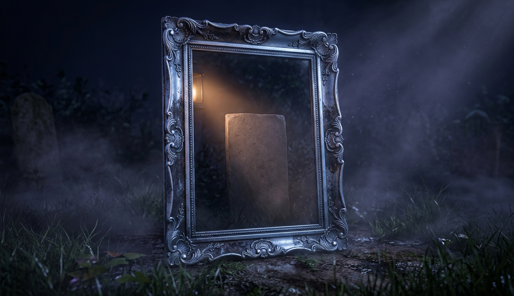
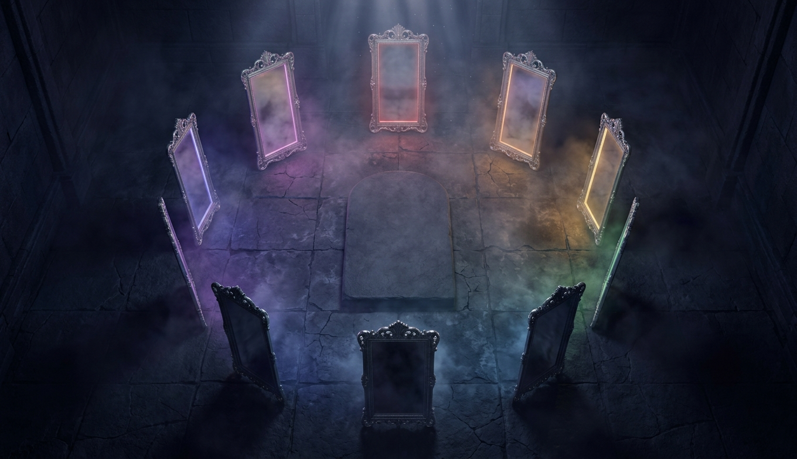

Ребёнок смотрит в зеркало и видит там не себя, а кого-то большого. Он ещё не знает ни одного имени, но уже знает, что кто-то есть. Первый вопрос выпуска: это желание, чтобы кто-то был, мы приносим с собой или получаем в комплекте с языком.

Один человек посреди семи зеркал, и в каждом он стоит по-разному: на коленях, с протянутой рукой, съёжившись, с кулаком. Если убрать привычку и традицию, осмысленных отношений с создателем остаётся ровно столько, сколько бывает с людьми. Ни одного нового.

Огромная фигура, втиснутая в маленькую раму, и свет течёт из щелей. Было бы нам тесно в его теле, а ему в нашем. У обоих направлений есть имя, и оба честные. Но они не симметричны, и в этом вся глава.

Надгробие, у которого вместо надписи зеркало, и в зеркале пустой трон. Место есть, свет на него падает, хозяина нет. Три объяснения: он отступал по мере того, как мы читали его код; он прячется намеренно; он снаружи по построению и войти не может. Третье знает каждый, кто хоть раз написал мир.

Одно зеркало в пустом зале, на него падает луч, и оно не отражает ничего: ни луча, ни зала. Единственная глава серии, где плашка «что говорит физика» пустая по построению, а не по незнанию. И это не провал главы. Это её результат.

Зеркала на разной высоте: в одни смотришь снизу вверх, в другие сверху вниз, в одно прямо. В каждом своё небо. Глава про взгляд, а не про того, на кого смотрят. И к концу главы окажется, что это одно и то же.

Человек за столом с книгами оборачивается через плечо, а в зеркале за его спиной он же смотрит прямо на тебя. Не на 180: тогда бы мы отвернулись от науки к душе, и это была бы проповедь. На 360: наука остаётся там же, с теми же ±, а в точке старта стоит тот, кто всё это заказал.

Правое зеркало с обложки, крупно. Плита в нём чистая, и на неё падает свет. Если бы он был, если бы встретились, если бы можно было спросить одно. Глава про то, какой вопрос стоит задать, и почему лучший из них оказывается вопросом, который уже задали нам.

Восемь глав, восемь зеркал, и в каждом свой ответ. Ни одного о нём. Все о том, кто стоит посередине. Дальше таблица и честная граница выпуска, единственного в серии без физики.